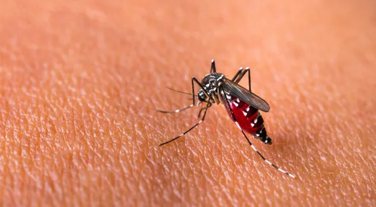

Demam Berdarah

Pengertian Demam Berdarah
Demam berdarah atau DBD adalah penyakit yang menular melalui nyamuk yang terjadi di daerah tropis dan subtropis di dunia. Gejala DBD yang umum adalah demam tinggi dan gejala seperti flu.
Sementara itu, pada DBD yang parah, kondisi ini bisa menyebabkan pendarahan serius, penurunan tekanan darah secara tiba-tiba (syok) dan bahkan kematian.
Jutaan kasus infeksi demam berdarah dengue terjadi di seluruh dunia setiap tahunnya. DBD paling sering terjadi di Asia Tenggara, pulau-pulau Pasifik barat, Amerika Latin dan Afrika.
Namun kini penyakit ini telah menyebar ke daerah baru, termasuk wabah lokal di Eropa dan bagian selatan Amerika Serikat.
Cara terbaik untuk mencegah infeksi adalah dengan menghindari gigitan nyamuk dan mengambil langkah-langkah untuk mengurangi populasi nyamuk.
Provinsi Teratas dengan Kasus DBD Terbanyak
| Kota |
Kasus DBD Terbanyak |
| Jakarta |
500 |
| Surabaya |
400 |
| Bandung |
300 |
| Yogyakarta |
250 |
Gejala Demam Berdarah
Banyak orang tidak mengalami tanda atau gejala DBD. Ketika gejala benar-benar terjadi, ini sering dikira sebagai penyakit lain, seperti flu.
Biasanya gejala DBD akan muncul mulai empat hingga 10 hari setelah mendapat gigitan nyamuk.
Penyakit ini bisa menyebabkan demam tinggi hingga 40 derajat Celsius. Selain itu, beberapa gejala lainnya, antara lain:
- Sakit Kepala
- Nyeri Otot tulang atau kepala
- Mual dan Muntah
- Sakit di belakang mata
- Kelenjar bengkak
Lantas, berapa hari tanda-tanda gejala DBD sembuh? Ternyata bisa bervariasi pada tiap orang, lho.
Simak selengkapnya di sini → Waktu yang Dibutuhkan untuk Sembuh dari Demam Berdarah
Dalam beberapa kasus, gejala DBD memburuk dan dapat mengancam jiwa. Nama lainnya adalah demam berdarah parah, demam berdarah dengue atau sindrom syok dengue.
DBD yang parah terjadi ketika pembuluh darah menjadi rusak dan bocor. Kondisi ini akan menyebabkan jumlah sel pembentuk gumpalan (trombosit) dalam aliran darah turun.
Hal ini dapat menyebabkan syok, perdarahan internal, kegagalan organ dan bahkan kematian.
Tanda-tanda peringatan DBD yang parah dan merupakan keadaan darurat dapat berkembang dengan cepat
Penyebab Demam Berdarah
Kamu tidak bisa terkena penyakit ini karena berada di sekitar orang yang terinfeksi sebab penyakit ini menular melalui gigitan nyamuk.
Dua nyamuk yang bisa menularkan virus ini adalah Aedes aegypti dan Aedes albopictus. Dua jenis nyamuk yang paling sering menyebarkan virus dengue ini umumnya ada di dalam maupun di sekitar pemukiman.
Ketika nyamuk menggigit seseorang yang terinfeksi virus dengue, virus tersebut masuk ke dalam nyamuk.
Kemudian, ketika nyamuk yang terinfeksi menggigit orang lain, virus memasuki aliran darah orang itu dan menyebabkan infeksi hingga gejala DBD muncul.
Setelah seseorang sembuh dari penyakit ini, ia akan memiliki kekebalan jangka panjang terhadap jenis virus yang menginfeksinya, tetapi tidak terhadap tiga jenis virus demam berdarah lainnya.
Ini berarti kamu bisa dapat terinfeksi lagi di masa depan oleh salah satu dari tiga jenis virus lainnya.
Risiko kamu terkena penyakit ini dengan tingkat yang parah akan meningkat jika kamu terkena demam berdarah untuk kedua, ketiga atau keempat kalinya.
Komplikasi Demam Berdarah
Demam berdarah yang parah dapat menyebabkan beberapa komplikasi, seperti perdarahan internal dan kerusakan organ.
Tekanan darah juga bisa turun ke tingkat yang berbahaya hingga menyebabkan syok. Dalam beberapa kasus, gejala DBD yang parah juga bisa menyebabkan kematian.
Wanita yang mengalami gejala DBD selama kehamilan dapat menyebarkan virus ke bayi saat melahirkan.
Selain itu, bayi dari ibu yang terkena penyakit ini selama kehamilan memiliki risiko kelahiran prematur, berat badan lahir rendah, atau gawat janin yang lebih tinggi.
Pengobatan Demam Berdarah
Sayangnya tidak ada pengobatan demam berdarah yang khusus untuk mengatasi gejalanya.Saat pulih, kamu harus minum banyak cairan.
Hubungi dokter juga segera jika kamu memiliki tanda dan gejala dehidrasi berikut ini:
- Berkurangnya buang air kecil
- Sedikit atau tidak ada air mata
- Mulut atau bibir kering
- Kelesuan atau kebinguangan
Cek Apakah Anda terkena DBD